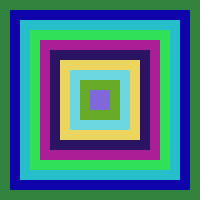

Box()
Syntax
Box(x, y, Width, Height [, Color])Description
Draw a box of given dimensions on the current output. The filling mode is determined by DrawingMode(). The current output is set with StartDrawing().
Parameters
x, y, Width, Height The position and size of the box in the current drawing output. Color (optional) The color to be used for the box. If this parameter is not specified, the default color set with FrontColor() will be used. This color can be in RGB or RGBA format.
Return value
None.
Example
If OpenWindow(0, 0, 0, 200, 200, "2DDrawing Example", #PB_Window_SystemMenu | #PB_Window_ScreenCentered) If CreateImage(0, 200, 200) And StartDrawing(ImageOutput(0)) y = 0 For x = 0 To 95 Step 10 Box(x, y, 200-2*x, 200-2*y, RGB(Random(255), Random(255), Random(255))) y + 10 ; the same as y = y + 10 Next x StopDrawing() ImageGadget(0, 0, 0, 200, 200, ImageID(0)) EndIf Repeat Event = WaitWindowEvent() Until Event = #PB_Event_CloseWindow EndIf

See Also
RoundBox(), Line(), Circle(), Ellipse() FrontColor(), RGB(), RGBA(), DrawingMode()
Supported OS
All